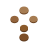

Click "Start Recording" then interactwith any page to capture steps
Session ended. What would you like to do?
This will permanently delete all recorded steps and any edits made in the editor. This cannot be undone.